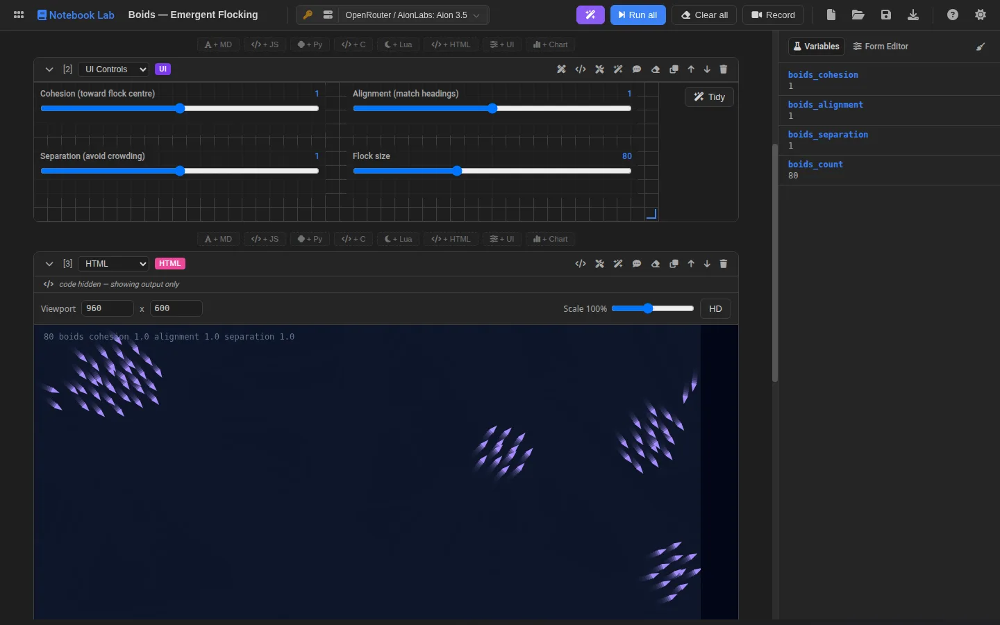
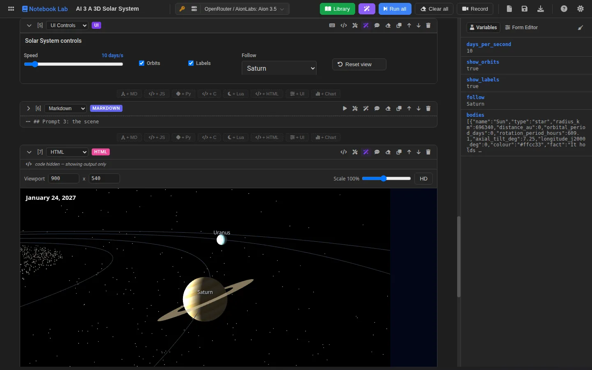

How it’s built · Polyglot notebooks
Notebook Lab
A notebook where each cell can be a different language and they all share one set of variables. A Python cell computes, a JavaScript cell turns the result into a chart, a slider in a controls cell changes the input, and an HTML cell redraws as you drag it. A model can write any cell, build a whole notebook from one request, or repair a cell that failed. Nothing runs on a server: every language runs in your browser.
- 6languages in the browser: JS, Python, C, Lua, HTML and Markdown
- 62tutorials and worked examples bundled
- 11control types for building live interfaces
- 124unit tests, plus a headless run of every example

One notebook, one set of variables
- PythonRuns in Pyodide (CPython compiled to WebAssembly), with NumPy, pandas and matplotlib. Writes
nb["key"] = value. - JavaScriptReads
nb.get("key"), and returning a Vega-Lite spec renders an interactive chart. - C and LuaFull programs that publish results by printing a tagged line:
__NB_SET__ {"key":…}. - ControlsSliders, pickers and buttons declared as JSON and bound to variables. A visual designer edits the layout.
- HTMLSandboxed frames that receive every change over a message bridge, so a canvas can redraw while a slider moves.
Design decisions
The runtime is not the UI
Executing a cell or a whole notebook is a plain service that returns results. The editor uses it, so does a small window.NotebookLabAPI, and so does a headless sweep that runs every bundled example in Chrome and reports any cell that fails.
Untrusted frames, trusted bridge
HTML cells run in sandboxed frames with an opaque origin, so they cannot reach the page or its storage. They get a small nb object instead, seeded with a snapshot and kept current with single-key patches; the parent accepts writes only from the frame it created.
Generated notebooks are a contract
A whole notebook comes back as strict JSON and is checked before you see it: known cell kinds, valid chart and control JSON, the languages you allowed, the visual output you asked for. It arrives as a draft, and nothing in your notebook changes until you accept it.
Packages that can be trusted
Python packages load the first time a cell imports them. Each file is checked against the SHA-256 in Pyodide’s lockfile before it is installed, and this site serves its own copies, so running a notebook makes no request to anyone else.
Where the model helps
Generate writes one cell from a description. The model sees the cells before it, the current values in nb (names, shapes and short previews) and, when it rewrites a cell, that cell’s own code, so “make the bars green” edits the cell instead of starting it again. Generate notebook plans and writes a complete teaching sequence. Fix lights up on a cell that failed: the model gets the source, the error and the recent output and returns a corrected cell. Explain turns a cell into a plain-language Markdown note. Every AI-written cell remembers its prompt and a hash of what was generated, so the editor can show when you have changed it since.
Built from prompts
Six tutorials show what a model can build when the person only describes what they want. Every code cell in them was written by an AI model, and each one keeps its prompt, so you can open it, change a sentence and generate it again.

- A 3D solar system: every planet where it is today, spinning on its tilted axis, with a camera that follows the one you pick.
- A game from two prompts: an original arcade game about flying parcels between planets.
- A living ecosystem: grass, rabbits and foxes on a grid, with the boom-and-bust cycles of real predator and prey.
- Research with search: has your city got warmer? Sourced figures, decades of daily temperatures, and warming stripes.
Try these
- Boids: flocking in an HTML canvas, tuned live from a controls cell.
- A* playground: steer a live search with sliders and watch Dijkstra, A* and greedy search explore differently.
- Terrain from NumPy: Python generates a heightmap, three.js renders it.
- SIR epidemic: set R₀ and the infectious period with sliders and watch the curves change.
Problems worth solving
- Streaming can freeze the page. Writing every streamed token into the notebook re-rendered it and re-tokenised the editor each time, and a long generation could hang the tab until Chrome killed it. Stream updates are now merged to at most one every 150 ms.
- Error output is data, not instructions. When a cell is repaired, its source, error and output are passed to the model inside fenced blocks marked as untrusted diagnostic data, and each block is capped in size.
- Charts that cannot read state. A chart cell is static Vega-Lite JSON and cannot see notebook variables, which is easy for a model to forget. The generation contract says so, and points it at a JavaScript cell that returns the spec when the data comes from an earlier cell.
The full version
The private workbench version adds Java, Go, Scala and Clojure, compiled with their real toolchains inside a Debian Linux system emulated in the browser, plus Rust. That system image is close to a gigabyte, too large for a static website, so this edition leaves those languages out and shows only the notebooks that run here.